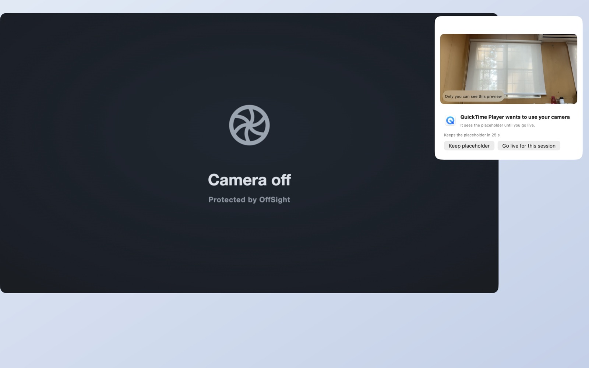
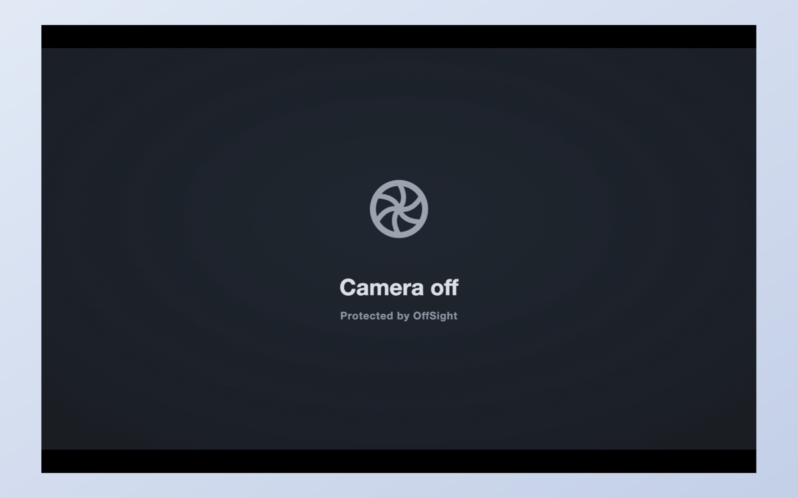
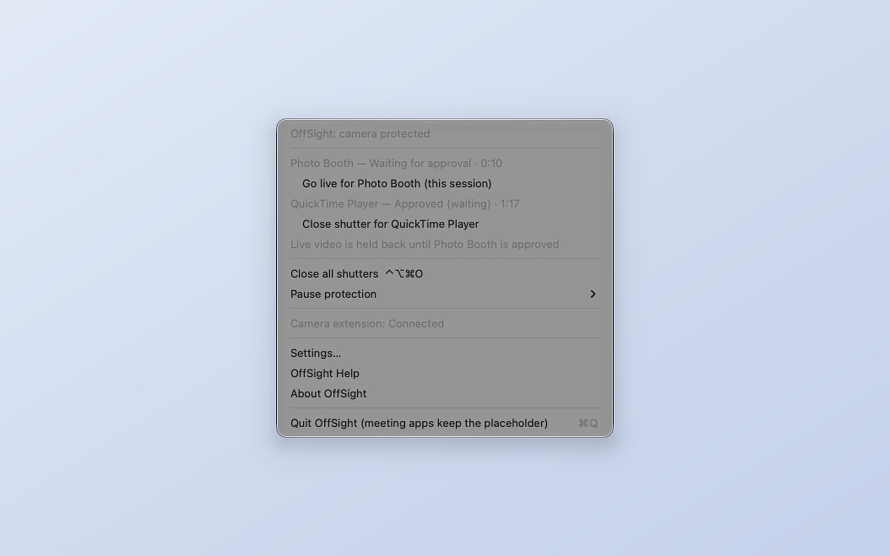
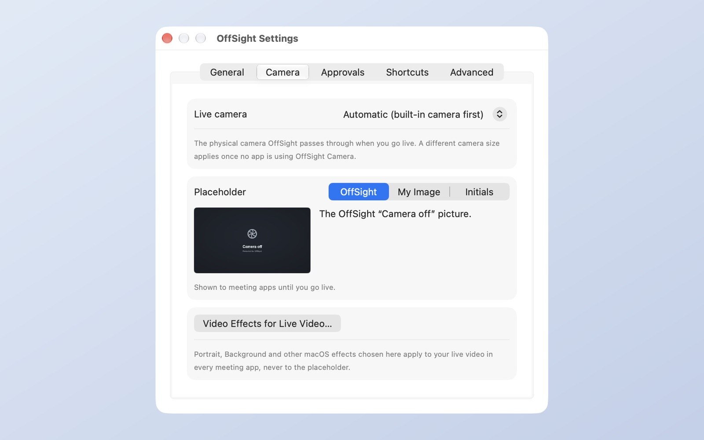
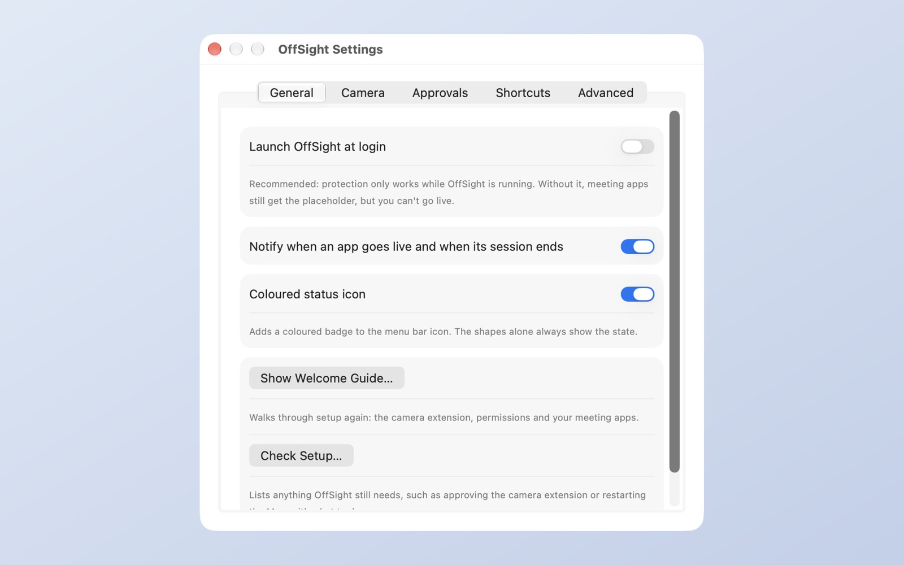

A camera shutter, in software
Meeting apps see a “Camera off” picture until you say Go live, for that app, for that call. When the call ends, the shutter closes again on its own.
Get OffSight on the Mac App Store

Why OffSight
Recent Macs have no physical camera shutter. It is easy to join a call with the camera already on, or to have an app you forgot about switch it on. OffSight puts a shutter back: once a meeting app is set to use OffSight Camera, nothing live reaches it until you approve it, one call at a time.
Free. Really.
OffSight is free, and every feature is in the free version because there is no other version. No in-app purchases, no subscription, no premium tier, no ads, no account. The full source code is on GitHub under the MIT License, so you can read exactly what it does with your camera, or build it yourself.
How it works
- OffSight adds OffSight Camera to your Mac. Choose it once as the camera in Zoom, Teams, Meet, Webex, Slack or FaceTime. Apps that stay on the real camera aren’t protected.
- When an app turns the camera on, it gets the placeholder, and OffSight asks you whether that app may see you, with a private preview only you can see.
- Approval lasts for one call. There is no “always allow”.
- If anything goes wrong, apps keep the placeholder. OffSight fails safe.
- Everything happens on your Mac. OffSight collects no data and has no network access.
See it in action




Features
- Per-app, per-call approval. Each app asks separately, and every new camera session asks again.
- Private preview. Check your hair and background before anyone else sees you.
- Unanswered means no. A prompt you ignore closes on its own and the app keeps the placeholder.
- Close the shutter any time from the menu bar or with a global keyboard shortcut.
- Pause protection for a while when you want to, with the menu bar icon showing it.
- macOS video effects (Portrait, Background and others) apply to your live video, never to the placeholder.
- Works with the apps you use: Zoom, Microsoft Teams, Google Meet and other browser meetings, Webex, Slack, FaceTime, Photo Booth and more.
- Private by design. No accounts, no analytics, no network access.
- Free and open source. No in-app purchases, no premium features, no subscription. MIT License.
Under the hood
macOS doesn’t let any app sit between other apps and the real camera, so OffSight can’t block or filter it. Instead it adds a second camera, OffSight Camera, that meeting apps can choose in place of the real one. All of the protection below applies to apps that use OffSight Camera.
The one thing you have to do: select OffSight Camera as the camera in each meeting app. An app left on your Mac’s real camera (FaceTime HD Camera, a USB webcam, your iPhone) bypasses OffSight completely: it isn’t asked, and it gets live video exactly as it would without OffSight. OffSight warns you when that happens, but it can’t stop it.
- A virtual camera. OffSight Camera is a CoreMediaIO Camera Extension, Apple’s supported way to add a camera to macOS. It runs as its own sandboxed system process and always sends a steady 30 fps stream, so meeting apps never see a dead or broken camera.
- OffSight opens the real camera only when needed. The OffSight Camera extension never touches your physical camera; the menu bar app opens it only while you’re looking at the preview or an approved call is live. So when apps use OffSight Camera, the green light comes on only when you’ve chosen to be seen. (Other apps can still open the real camera directly; see below.)
- Two independent gates. The app decides who may go live; the extension enforces it on its own, frame by frame. The extension knows each app using it (process and code signature), and live frames carry a tag tied to that exact set of apps. If a new app joins, the tag stops matching on the very next frame and every app falls back to the placeholder until the newcomer is approved or leaves.
- Only OffSight can feed it. The extension accepts video only from OffSight itself, installed in your Applications folder. Nothing can read your camera through it, and no script, URL or shortcut can approve an app: only a real click or keypress on the prompt.
- Fail closed. If the app quits, crashes or stops sending frames, the extension switches to its built-in placeholder within a tenth of a second. Approvals live only in memory and are never saved, so nothing carries over to the next call or a restart.
- Back doors flagged, not blocked. If any app opens your physical camera directly instead of OffSight Camera, the menu bar icon switches to its unprotected state so you know. macOS gives OffSight no way to block that; switch the app to OffSight Camera to bring it under protection.
- Small and local. Written in Swift, sandboxed, with no network access and a single small third-party library (for keyboard shortcuts). The core approval logic is a separate, heavily unit-tested package.
The full design is in the architecture notes.
Get started
- Install OffSight from the Mac App Store and open it.
- Follow the welcome guide: allow the OffSight camera extension and camera access.
- In each meeting app, choose OffSight Camera as the camera.
The Help page walks through each step, with settings for every meeting app.